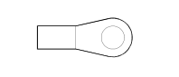

C012 ABS FRONT EARTH (FRONT)
- Path
- Electrical equipment > 3 CONNECTORS > C EARTHS > C012 ABS FRONT EARTH > C012 ABS FRONT EARTH (FRONT)
- Kind
- connector pinout (pin -> wire colour -> other end)
- Applies to
- engines: 1.1, 1.2 8v; all production periods
- Interactive page
- https://sloeber94.github.io/elrnDB-fPnd/en/#/169002707
Applies to: engines: 1.1, 1.2 8v; all production periods

Wiring | Colour |
|---|---|
- |
Pin | Cable | Destination | |||
|---|---|---|---|---|---|
Sec.. | Colour | Node | Connect. | Pin | |
1 | 6 | N (black) | X | 4 | |
1 | |||||